NX / 01ENTERPRISE
NEXAORA Intelligence
An enterprise intelligence layer for multimodal understanding, agentic workflows, organizational knowledge and decision support.
KNOWLEDGE→REASONING→ACTION

Contact ↗NEXAORA engineers the intelligence layer for a new era — combining AI, autonomous systems, aerospace and advanced computing to move intelligence from models into the real world.
Products are where NEXAORA architecture becomes operational — connecting models, agents, knowledge and real-world systems into deployable intelligence.
An enterprise intelligence layer for multimodal understanding, agentic workflows, organizational knowledge and decision support.
Persistent reasoning for research, analysis, synthesis and executive decision intelligence.
Perception, planning and control for intelligent machines, robotics and edge environments.
Mission-control intelligence for telemetry, planning, digital twins, operators and autonomy.
Mission intelligence for satellite, Earth observation and resilient aerospace operations.
Deployable intelligence for constrained, latency-sensitive and disconnected environments.
Digital-twin intelligence for scenario exploration, predictive operations and autonomy development.
Quantum computing, sensing, communications and aerospace optimization exploration.
We build AI as a systems discipline — from foundation models and multimodal perception to agents, decision intelligence and production-grade evaluation.
Language, vision, speech and multimodal intelligence engineered around real domain context.
MODELSReasoning, planning, tool use and multi-agent orchestration with explicit control boundaries.
AGENTSRAG, knowledge graphs and semantic layers that ground models in trusted organizational knowledge.
KNOWLEDGEPrediction, optimization and decision support for environments where uncertainty matters.
DECISIONModels are components. NEXAORA designs the complete intelligence system around them.
Representative NEXAORA demonstrations showing how intelligence moves from fragmented inputs to measurable decisions and autonomous action.
Design a grounded intelligence layer that connects documents, structured data and organizational knowledge to reliable answers and decision workflows.
Connect multimodal perception, planning, simulation and policy controls for workflows where software must operate against a changing environment.
Architect resilient mission intelligence across edge systems, observation data and planning layers for constrained aerospace environments.
NEXAORA case studies are representative architecture demonstrations unless a customer engagement is explicitly identified.
Frontier research is valuable when it can be evaluated, engineered and deployed responsibly.
Planning, memory, tool use, multi-agent collaboration and reliable autonomous workflows.
EXPLORE ↗Perception and reasoning that connect intelligence to robotics, edge devices and physical environments.
EXPLORE ↗Virtual environments for testing complex decisions before they reach expensive or safety-critical systems.
EXPLORE ↗AI becomes mission infrastructure when perception, planning and autonomy operate across constrained, dynamic environments.
Exploring the intersection of quantum computing, sensing, communications and aerospace optimization.
A production AI organization needs more than models. It needs data, evaluation, security, observability and continuous learning.
Intelligence is designed as an end-to-end system, not an isolated model.
Research earns its place by surviving real constraints and real users.
Identity, policy, provenance and observability are designed into the system.
Reliable intelligence is measured continuously across quality, safety and operational performance.
We believe the next generation of companies will be built around intelligent systems — systems that perceive, reason, act and improve.
From enterprise systems to autonomous machines and aerospace missions, NEXAORA is building the architecture for intelligence beyond boundaries.
Bring us the mission, system or frontier problem. We’ll bring the architecture.
Start a Conversation ↗